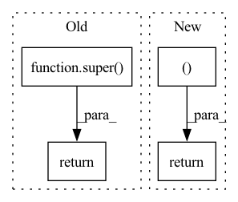

Pattern ID :24605
Before Change
if not delta == 0:
raise ValueError("Delta must be zero")
return super() ._check_epsilon_delta(epsilon, delta)
@classmethod
def special_check_for_params(cls, utility, candidates, measure):After Change
if epsilon + delta == 0:
raise ValueError("Epsilon and Delta cannot both be zero")
return float(epsilon), float(delta)
@classmethod
def _check_sensitivity(cls, sensitivity):
if not isinstance(sensitivity, Real):In pattern: SUPERPATTERN
Frequency: 7
Non-data size: 4
Instances Fragment ID: 76362301
Project Name: fedml-ai/fedml
Commit Name: e055caa079acd7aab92d913246b222161130ae40
Time: 2022-08-25
Author: sshan0731@hotmail.com
File Name: python/fedml/core/dp/mechanisms/exponential.py
M Class Name: Exponential
N Class Name: Exponential
M Method Name: _check_epsilon_delta(3)
N Method Name: _check_epsilon_delta(3)
M Parent Class:
N Parent Class:
M File Name: python/fedml/core/dp/mechanisms/exponential.py
N File Name: python/fedml/core/dp/mechanisms/exponential.py
M Start Line: 65
M End Line: 68
N Start Line: 161
N End Line: 173
Before Change
lb, ub = model.compute_bounds(x=(my_input,), method="backward")
import pdb; pdb.set_trace()
return super() .get_one_step_reachable_set(input_constraint, output_constraint)
def create_model(self, num_steps):After Change
lb, ub = model.compute_bounds(x=(my_input,), method="backward")
output_constraint.range = np.vstack((lb.detach().numpy(), ub.detach().numpy())).T
return output_constraint, {}
Fragment ID: 76362300
Project Name: mit-acl/nn_robustness_analysis
Commit Name: 0da01fc517d436fe7bdf533c50f58149ec5b3e29
Time: 2023-03-07
Author: nrober1122@gmail.com
File Name: nn_closed_loop/nn_closed_loop/propagators/ClosedLoopAUTOLIRPAPropagator.py
M Class Name: ClosedLoopAUTOLIRPAPropagator
N Class Name: ClosedLoopAUTOLIRPAPropagator
M Method Name: get_one_step_reachable_set(4)
N Method Name: get_one_step_reachable_set(4)
M Parent Class: ClosedLoopPropagator
N Parent Class: ClosedLoopPropagator
M File Name: nn_closed_loop/nn_closed_loop/propagators/ClosedLoopAUTOLIRPAPropagator.py
N File Name: nn_closed_loop/nn_closed_loop/propagators/ClosedLoopAUTOLIRPAPropagator.py
M Start Line: 74
M End Line: 86
N Start Line: 76
N End Line: 87
Before Change
@classmethod
def from_pretrained(cls, pretrained_model_name_or_path, *model_args, **kwargs):
model = super() .from_pretrained()
model.numericalizer = BartNumericalizer(pretrained_model_name_or_path)
return model, 0 //TODO return best_decascore
def __init__(self, config=None, *inputs, **kwargs):
self.args = kwargs.pop("args", None)After Change
save_dict = torch.load(full_checkpoint_path, map_location=device)
model.load_state_dict(save_dict["model_state_dict"])
return model, save_dict.get("best_decascore")
def __init__(self, config=None, *inputs, **kwargs):
self.args = kwargs.pop("args", None) Fragment ID: 76362303
Project Name: stanford-oval/genienlp
Commit Name: 446c42622083e0413e9437c8fdd4be61e7bb6b13
Time: 2020-11-07
Author: s.j.semnani@gmail.com
File Name: genienlp/models/general_seq2seq.py
M Class Name: Bart
N Class Name: Bart
M Method Name: from_pretrained(2)
N Method Name: from_pretrained(2)
M Parent Class: nn.Module
N Parent Class: BartForConditionalGeneration
M File Name: genienlp/models/general_seq2seq.py
N File Name: genienlp/models/general_seq2seq.py
M Start Line: 286
M End Line: 288
N Start Line: 286
N End Line: 298
Before Change
return valid ? (idx4 == 0 ? dat.x : (idx4 == 1 ? dat.y : (idx4 == 2 ? dat.z : dat.w))) : 0.0;
}}, f"read_only image2d_t {name}_g", f"get_{name}(smp, {name}_g, gid);"
//ewtypes.append(f"read_only image2d_t {name}_g")
return super() .contiguous_view_constant_fold(name, reduce)
def _processing_op(ret, bufs: List[Tuple[str, OpenCLBuffer]]=[], code:str="acc", C=None, op=ReduceOps.SUM, reduce_shape=None, earlybufs:Set[str]=set(), earlycode:str="acc", op_estimate=0):
if C is None or earlycode != "acc":After Change
idx_getter = f"int valid = 1; {"long" if prod(x.shape) >= 2**31 else "int"} idx = gid; {"idx *= "+str(reduce)+" idx += subidx;" if reduce is not None else ""} {x.st.expr().replace("//", "/")};"
constant = x._backing[0] if x._base_shape == (1,) and x._backing is not None else None
args = (["__global const float *x"] if constant is None else []) + ["int gid"] + (["int subidx"] if reduce is not None else [])
return f"inline float get_{name}({",".join(args)}) {{ {idx_getter} return valid ? {constant if constant is not None else "x[idx]"} : 0.0;}}", \
f"__global const float *{name}_g" if constant is None else None, \
f"get_{name}({name+"_g, " if constant is None else ""}gid{", subidx" if reduce is not None else ""});"
@classmethod
def exec_ast(cls, ast:LazyOp):
// copied from llvm Fragment ID: 76362302
Project Name: geohot/tinygrad
Commit Name: fff1f046b0158f817c0dbb02602680c3ba4cb394
Time: 2023-01-10
Author: 72895+geohot@users.noreply.github.com
File Name: accel/opencl/ops_opencl.py
M Class Name: OpenCLBuffer
N Class Name: OpenCLBuffer
M Method Name: contiguous_view_constant_fold(3)
N Method Name: contiguous_view_constant_fold(3)
M Parent Class: GPUBuffer
N Parent Class: GPUBuffer
M File Name: accel/opencl/ops_opencl.py
N File Name: accel/opencl/ops_opencl.py
M Start Line: 232
M End Line: 232
N Start Line: 232
N End Line: 237
Before Change
_input, _label = super().get_data(data, **kwargs)
adv_x, _ = self.pgd.optimize(_input=_input, target=_label)
return adv_x, _label
return super() .get_data(data, **kwargs)
def _validate(self, adv_train: bool = None, **kwargs) -> tuple[float, float]:
adv_train = adv_train if adv_train is not None else self.adv_trainAfter Change
assert self.pgd is not None
adv_x, _ = self.pgd.optimize(_input=_input, target=_label)
return adv_x, _label
return _input, _label
def _validate(self, adv_train: bool = None, **kwargs) -> tuple[float, float]:
adv_train = adv_train if adv_train is not None else bool(self.adv_train)
if not adv_train: Fragment ID: 76362299
Project Name: ain-soph/trojanzoo
Commit Name: 329e44e3e00f87313aeac584a0b70d02269b2214
Time: 2021-09-16
Author: ain-soph@live.com
File Name: trojanvision/models/imagemodel.py
M Class Name: ImageModel
N Class Name: ImageModel
M Method Name: get_data(3)
N Method Name: get_data(3)
M Parent Class: Model
N Parent Class: Model
M File Name: trojanvision/models/imagemodel.py
N File Name: trojanvision/models/imagemodel.py
M Start Line: 214
M End Line: 217
N Start Line: 221
N End Line: 226
Before Change
super().__init__(**kwargs)
def find_segment(self, *args, **kwargs):
return super() .find_segment.__wrapped__(*args, **kwargs)
def segment(self, word: str) -> str:
return super().segment.__wrapped__(word)
After Change
def find_segment(self, text, prev="<S>"):
if not text:
return 0.0, []
candidates = [self.combine((log10(self.condProbWord(first, prev)), first), self.find_segment(rem, first))
for first, rem in self.splits(text)]
return max(candidates)
Fragment ID: 76362298
Project Name: ruanchaves/hashformers
Commit Name: 40f329f1ba89475839c1ac22fcc3f876b81b954c
Time: 2022-02-06
Author: ruanchaves93@gmail.com
File Name: src/hashformers/segmenter.py
M Class Name: EkphrasisWordSegmenter
N Class Name: EkphrasisWordSegmenter
M Method Name: find_segment(3)
N Method Name: find_segment(1)
M Parent Class: BaseSegmenter,EkphrasisSegmenter
N Parent Class: BaseSegmenter,EkphrasisSegmenter
M File Name: src/hashformers/segmenter.py
N File Name: src/hashformers/segmenter.py
M Start Line: 72
M End Line: 72
N Start Line: 73
N End Line: 77
Before Change
@staticmethod
def backward(ctx, *grad_outputs):
return super() .backward(ctx, *grad_outputs)
After Change
x2.requires_grad = True
y1, y2 = ctx.function(x1, x2, mask)
grad = torch.autograd.grad(outputs=(y1, y2), inputs=(x1, x2), grad_outputs=grad_outputs)
return (None, *grad, None )
Fragment ID: 76362305
Project Name: rick-mccoy/reformer-pytorch
Commit Name: 4da6d0fcb3ce7e616d2e8cc9195b5b21dfd431cb
Time: 2020-01-10
Author: rickmccoy3141@gmail.com
File Name: model/reversible.py
M Class Name: Reversible
N Class Name: Reversible
M Method Name: backward(1)
N Method Name: backward(1)
M Parent Class: Function
N Parent Class: Function
M File Name: model/reversible.py
N File Name: model/reversible.py
M Start Line: 22
M End Line: 22
N Start Line: 24
N End Line: 34